Neuroradiology series · Part 1 of 4
Reading the Compressed Cord
Cervical neuroradiology for advanced practice providers — what to look at, in what order, and what fools you.
Companion to the timeline figures.
1Before you open the study
Three habits, ten seconds each. They change what you see.
2Which sequence is which
One heuristic settles it: CSF bright → T2 or STIR. Fat also bright → T2. Fat dark → STIR.
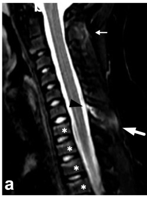
CSF bright, fat dark
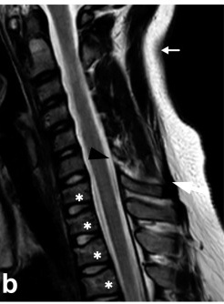
CSF bright, fat bright
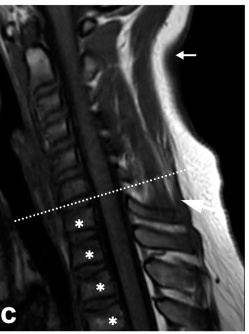
CSF dark, fat bright
Sagittal STIR / T2 / T1 of one cervical spine, one patient, one sitting. From a paediatric flexion injury, so the vertebral marrow is redder and less bright on T1 than an adult’s would be — the CSF signal is the reliable cue at any age.
GRE is deliberately not in this strip — in a routine cervical protocol it is acquired axially, not sagittally, so it does not belong in a sagittal comparison. See below.
Sjoberg et al., Children 2023;10:1094, Fig 9 CC BY 4.0
The orientation image
One cervical spine, the same sitting, three sequences side by side
This is the single highest-value teaching image in the talk. Everything downstream depends on the audience knowing which sequence they are looking at without being told.
- T1
- Anatomy, marrow, myelomalacia (dark cord). Fat is bright, CSF is dark.
- T2
- CSF contrast, cord signal change, disc morphology. Both CSF and fat bright.
- STIR
- Edema — marrow, ligament. CSF bright, fat suppressed to dark.
- GRE
gradient echo - Calcification, ossified ligament, haemorrhage. Usually an axial acquisition — see the next card.
The fourth sequence: gradient echo
Gradient echo (GRE) is the one you are least likely to have seen, because it is not part of the sagittal stack. Most cervical protocols acquire it axially, angled through each disc space. Your scanner probably calls it something else — MERGE on a GE machine, MEDIC on a Siemens, or just T2* (say "T-two-star"). Those are vendor brand names for the same family of sequence.
You are not usually asked to identify a gradient echo at a glance. You are asked whether it is worth getting, and there are two answers that matter.
It matters to you for one reason: it changes the operation. Ordinary spondylosis can often be decompressed from behind, letting the cord drift backwards away from the disc and bone in front. If a thick bar of ossified ligament is in the way, the cord may have nowhere to drift to, and the surgeon has to come from the front instead. (The measurement that predicts this is called the K-line; you do not need to draw it, only to know that the question exists.) Commonest in patients of East Asian ancestry, but present everywhere.

One caveat, or it will confuse people: panel (c) is reconstructed to look like CT, so the ossification appears bright. On the standard T2* gradient echo in your own protocol, calcium and blood do the opposite and bloom dark. Same family of sequence, opposite appearance.
Yoon et al., Neuroradiology 2025, Fig 1 CC BY 4.0
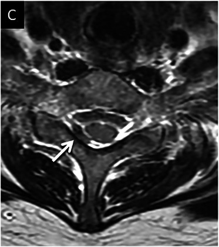
blood, or just flow?
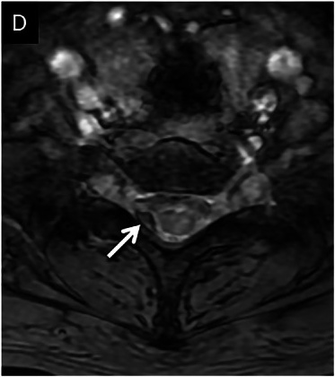
bigger, blacker = blood
Reason two — it separates blood from flow artifact
Axial T2 first, then axial GRE at the same level
An eccentric dark spot beside the cord on T2 is ambiguous: it could be haemorrhage, or it could just be moving CSF. The gradient echo decides it, and the two answers look opposite:
- Blood
- Blooms — the dark spot gets bigger and blacker on GRE than it was on T2.
- Flow
- Vanishes — the dark patch disappears entirely and the CSF goes uniformly bright.
This card shows the blooming version. You will see the vanishing version in section 5, where the same trick is used to throw out a false call of cord compression.
3The eight-step read
Run it in this order every time. The order is front-loaded by urgency, so if you are interrupted after step three you have already found what matters.
4The findings that change management
Five findings. For each: where to look, what you see, how to grade it, and what it means.
The colour of each card is its severity. Orange = mechanical, potentially reversible · Red = the cord itself is injured. They are ordered worst-last: cord atrophy is the most serious finding on this page, not the mildest.
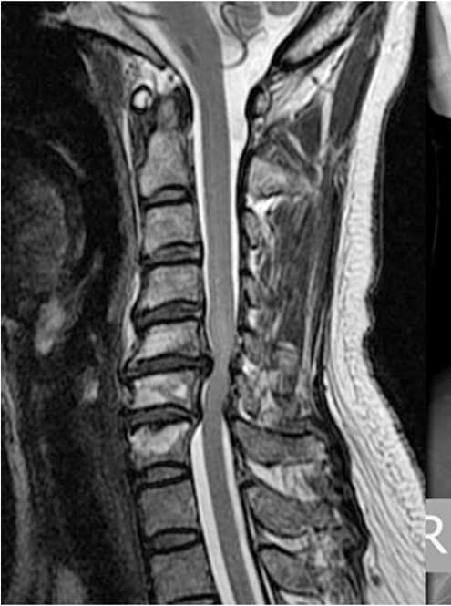
Loss of the CSF stripe
Sagittal T2 to detect · axial T2 to characterise
The bright CSF outlining the cord thins, then disappears. Trace the anterior and posterior columns separately — they are effaced independently and the pattern matters.
- Grade 0
- Normal subarachnoid space
- Grade 1
- Partial obliteration, anterior or posterior
- Grade 2
- Complete obliteration, no cord deformity
- Grade 3
- Cord deformity or impingement
What it means: effacement without deformity is the entry point to the "asymptomatic compression" conversation. On its own it is not an operative finding.
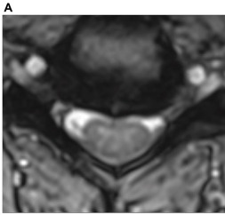
CSF preserved
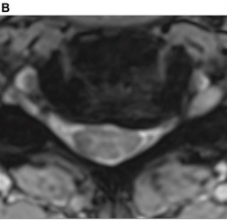
ventral CSF partly gone
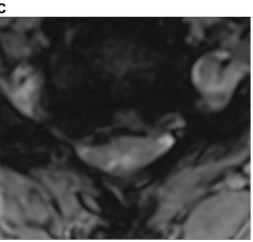
CSF effaced
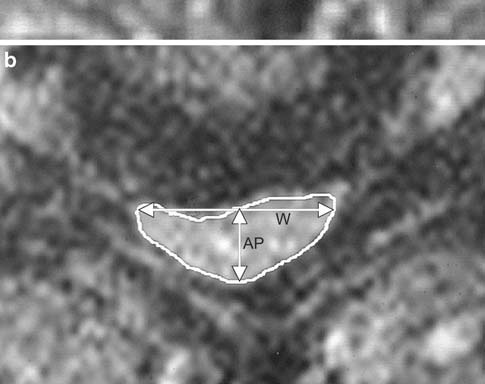
compression ratio 0.37 · cross-sectional area 71 mm²
Measured example: Bednarik et al., Eur Spine J 2008, Fig 2b · permission pending
Cord deformation
Axial T2 at the narrowest level — never grade shape off a sagittal
The normal cervical cord is a rounded oval, wider side-to-side than front-to-back. Under compression it flattens, then becomes crescentic as the anterior surface is indented.
Compression ratio = smallest AP diameter ÷ largest transverse diameter. Lower is worse. Two readers measuring the same cord agree closely on it (ICC 0.80, where 1.0 is perfect).
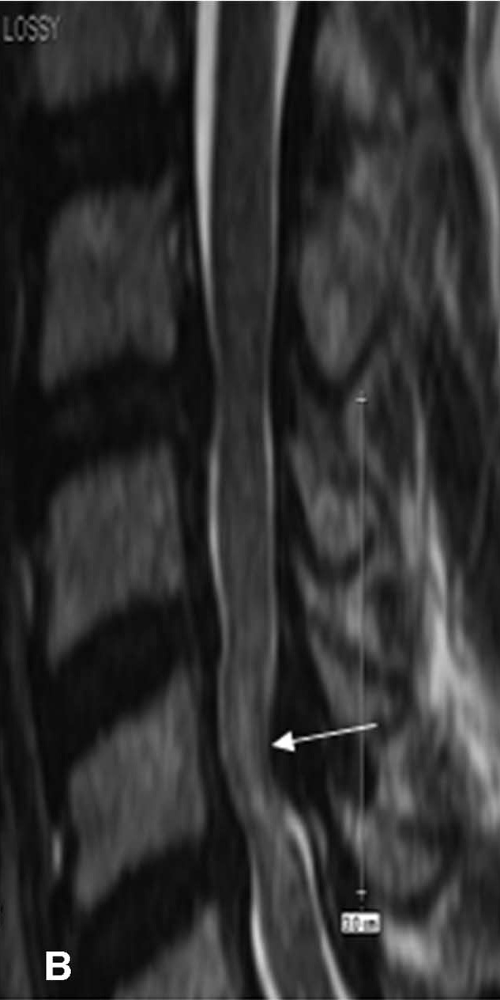
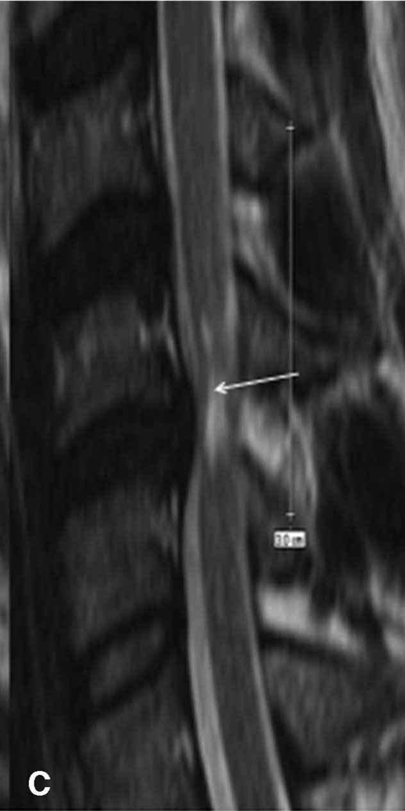
T2 hyperintensity in the cord
Sagittal T2 to detect · axial T2 to confirm it is real
Bright signal within the cord substance, usually at or just above the level of maximal compression, often centred on central grey matter. Characterise it as focal (one segment, crisp) or diffuse (spanning segments, hazy), and count the levels.
| Multilevel T2 | Worse baseline severity and lower recovery ratio (p = 0.001). Present in 27%. |
| Single-level T2 | Outcomes no different from no signal change at all (p = 0.275). |
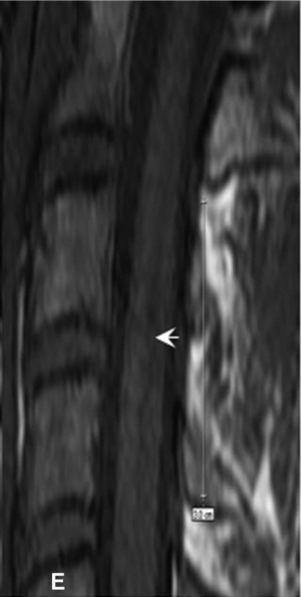
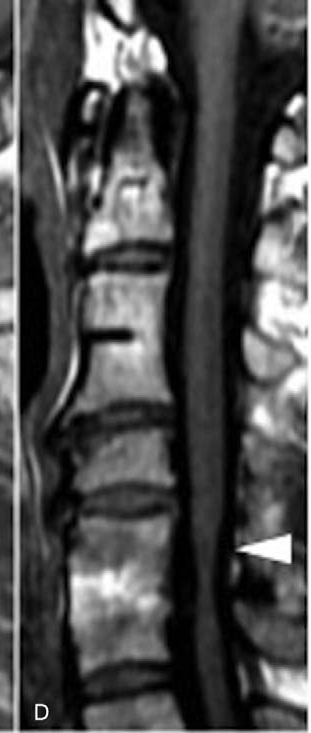
T1 hypointensity — the money finding
Sagittal T1, deliberately, at every level where T2 was bright
Cord darker than normal cord at the same level. This is cavitation and established myelomalacia, not reversible oedema. It will not announce itself — you have to switch sequences and look.
| Reduced recovery ratio | p = 0.03 |
| Lower odds of an optimal outcome | OR 0.45, p = 0.005 |
| Post-op resolution improves outcome? | No (p = 0.36) — unlike T2 |
Say this to the patient: "This doesn't mean don't operate. It means the goal shifts from restoring what you've lost toward protecting what you still have."
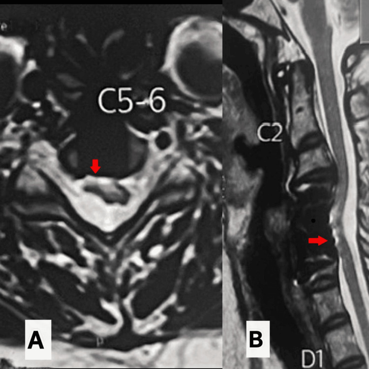
Two-year follow-up MRI after single-level anterior cervical corpectomy. Cureus 2026;18:e107566, Fig 6 CC BY 4.0
Cord atrophy
Sagittal T2 for impression · axial T2 compared to uninvolved levels
Reduced cord calibre, often with a deceptively roomy CSF space — the canal looks decompressed because the cord shrank, not because the compression resolved. A classic trap in a severely myelopathic patient.
Mimic: physiologic tapering below the cervical enlargement (roughly below C6) is normal. Compare to expected calibre at that level, not to the enlargement above.
The example shown is a two-year post-operative follow-up, where the contrast is easiest to see — but atrophy is not a post-surgical finding. It occurs in long-standing untreated compression too, and that is where it does the most damage: a scan that reads as "adequate canal" in a patient who is visibly myelopathic. Trust the examination over the roominess.
5Three things that will fool you
Every one of these is a false positive that looks convincing on a single image and evaporates on a second plane. This is the highest-yield section of the talk.
Truncation (Gibbs) artifact — the commonest false-positive cord finding
A thin bright line down the centre of the cord on sagittal T2. It is linear, uniform across many segments, and vanishes on the axial. Real signal change is segmental and persists.
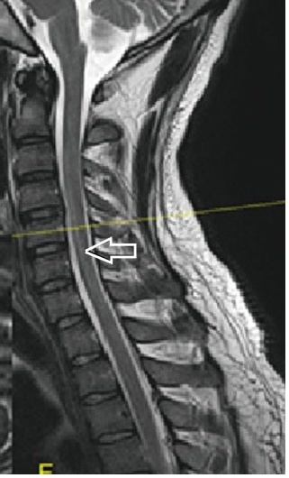
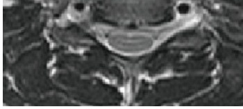
Nayak & Gaikwad, Korean J Radiol 2019;20:1474, Fig 1, cropped CC BY-NC 4.0
CSF flow artifact — mimics effacement, and mimics blood
Moving CSF loses signal, so dark patches appear in the subarachnoid space and read as loss of the CSF stripe — or, when eccentric, as haemorrhage. Named explicitly as a source of diagnostic error in the cervical stenosis literature. A gradient-echo sequence settles it: the artifact disappears, real blood blooms darker.
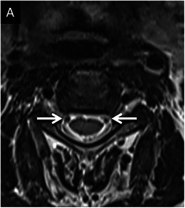
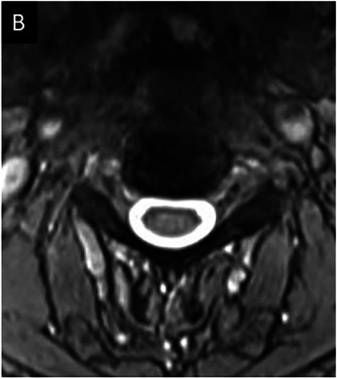
Rakesh et al., Insights Imaging 2025;16:2153, Fig 5a–b CC BY 4.0
Oblique slice angle — makes a compressed cord look normal
If the axial slice is not perpendicular to the cord — common at the apex of a kyphosis — the cord is cut at a slant. The slant stretches the front-to-back dimension by 1 ÷ cos θ while leaving the side-to-side dimension untouched, so the cord looks rounder and larger than it really is. The compression ratio comes out too high and the cross-sectional area is overestimated. This error runs toward false reassurance — it makes a compressed cord read as an adequate one, which is why it is worth knowing. Check the slice angulation on the localiser before you trust a compression ratio.
Schematic drawn for this handout · geometry, not a case
So how do you fix it?
- Reading a study already done
- You cannot un-angle it, and nothing you do at the workstation recovers the true number. Do not quote a compression ratio from that level. Grade at a neighbouring level where the cord runs straight, or describe it in words — "severe ventral compression at C5–6" is defensible; "compression ratio 0.64" is not.
- If the decision turns on it
- Ask for a re-angled axial block through that level, or a reformat perpendicular to the cord if a 3D isotropic sequence was acquired. That is minutes of scanner time, and cheap when the question is operate or watch.
- Preventing it next time
- Axial blocks should be angled to each disc space rather than one fixed tilt for the whole stack. Worth mentioning to your techs once — it is a protocol habit, not a special request.
- The sentence that protects the patient
- "Measurement unreliable at this level — slice angulation." That tells the surgeon far more than a falsely reassuring number does, and it is the one thing here that is entirely within your control.
6What you can and cannot call
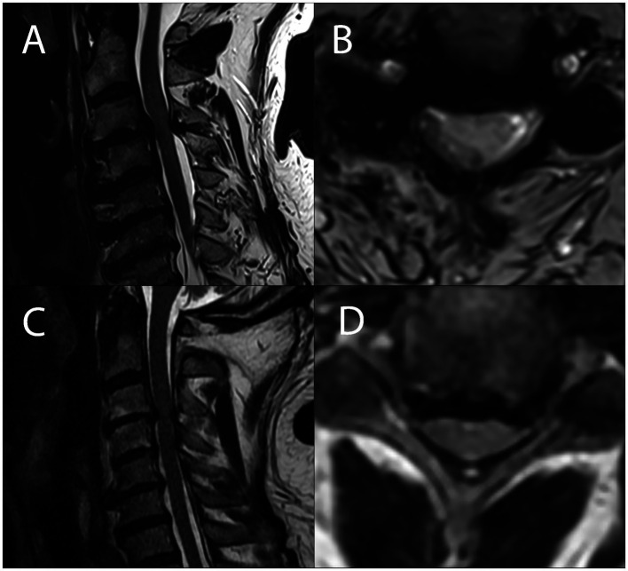
Kadanka et al., Front Neurol 2024;15:1341371, Fig 2 CC BY 4.0
| Call it and act on it | Defer it, always |
|---|---|
| Presence, level and number of levels of compression | Any mass, marrow replacement or enhancing lesion |
| Loss of CSF signal around the cord | Infection — discitis, epidural abscess, paraspinal collection |
| Cord deformation and gross atrophy | Intramedullary lesions that are not clearly compression-related |
| T2 hyperintensity and (cautiously) T1 hypointensity | Anything outside the spine on the visible slices |
| Gross alignment — lordosis, kyphosis, listhesis | Post-operative scar versus recurrent disc |
| Study adequacy for the clinical question | Anything you are about to talk yourself into |
Nouri A, et al. Spine 2017;42:1851–1858 (n = 419) — T1 and T2 signal prognostics, inter-rater reliability. · Kato S, et al. Spine 2018;43:824–831 (n = 167) — post-operative signal resolution. · Karpova A, et al. Spine 2013;38:245–252 — reliability of quantitative measures. · Jensen MC, et al. NEJM 1994;331:69–73 and Brinjikji W, et al. AJNR 2015;36:811–816 — asymptomatic base rates. · Crawford CH III, et al. JAAOS 2026;34(4):e555–e560 — artifact as a source of diagnostic error.
Prepared for the MANS 2026 Summer Meeting APP session. This supports clinical triage and communication; it does not substitute for formal radiologic interpretation.